[教程]我平时用的deb安装包打包方法 16.07.04_12:29:09该教程不确保是真正的deb打包方法，只是我平时这样用的而已。反正能用。 -----------------------------------------------【打包文件结构】-------------------------------------------------- ①新建一个文件夹用来存放程序所需的文件 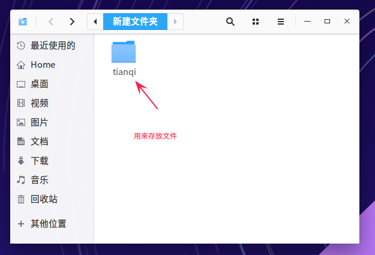
②建立DEBIAN文件夹和实际所需的文件夹
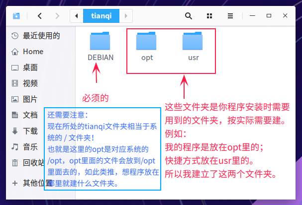
③创建编写control文件
Package:包名字，决定了就别乱改
Depends:依赖
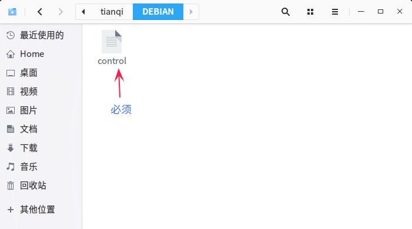
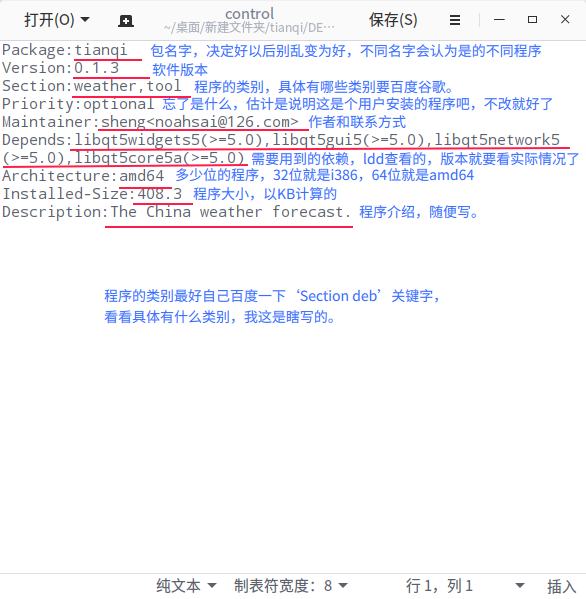
④按照实际安装位置 创建一系列所需的文件夹，将程序文件等放到对应位置
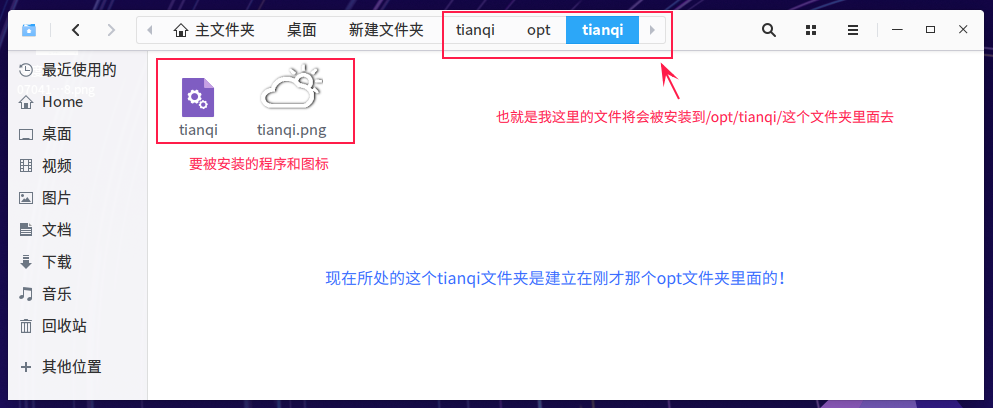
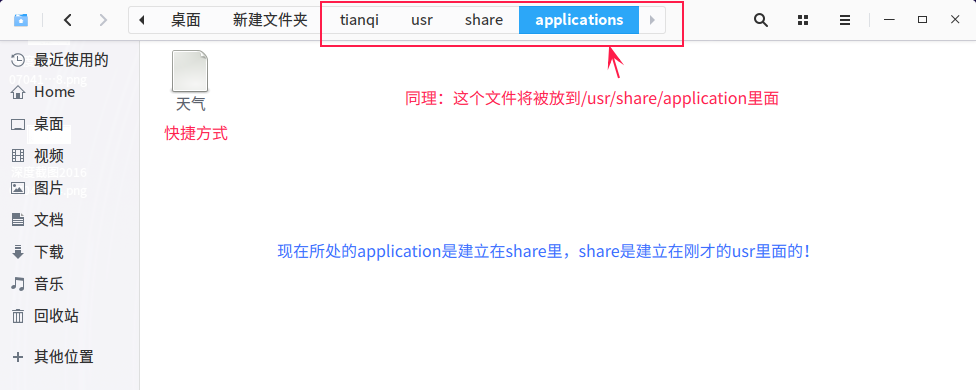
-------------------------------------【创建对应的快捷方式】--------------------------------- ①新建一个.desktop 文件，打开
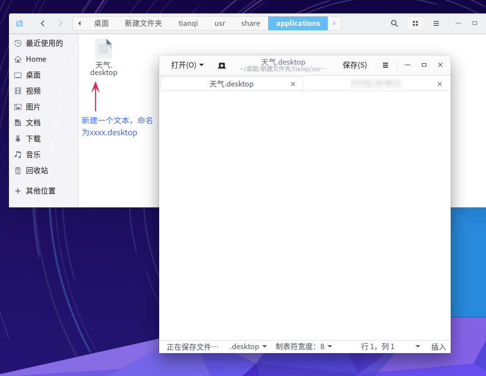
②填入一下相应信息，保存，修改为可执行文件。
[Desktop Entry]
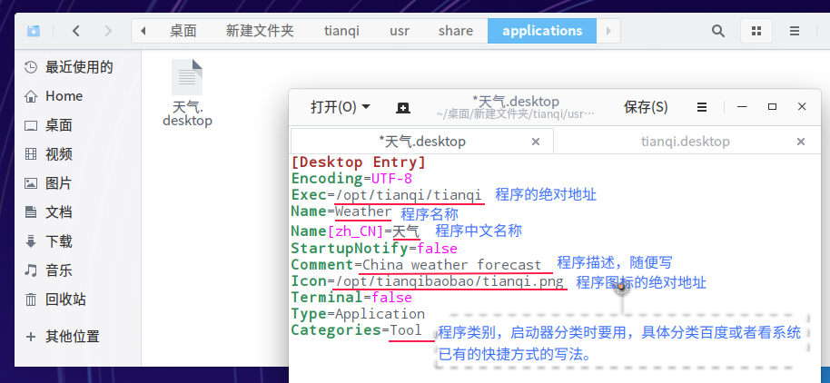
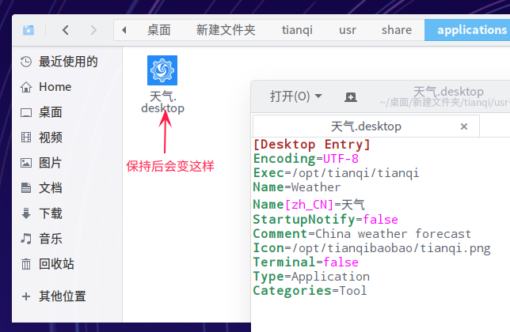
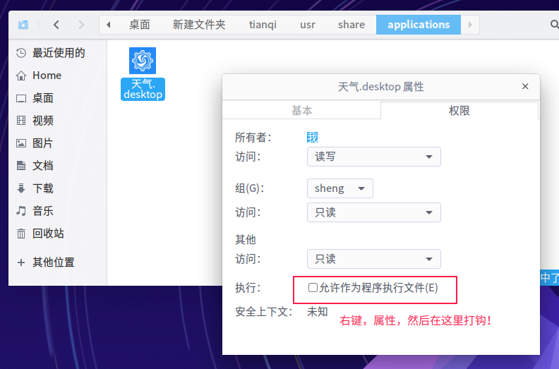
---------------------------------【进行打包】---------------------------- 返回存放程序文件的那个文件夹的位置，例如我用tianqi文件夹存放文件的，我的tianqi文件夹是在‘新建文件夹’里的， 那么就返回到‘新建文件夹’里面。 使用： dpkg -b 文件夹 生产的文件名.deb 具体看图：
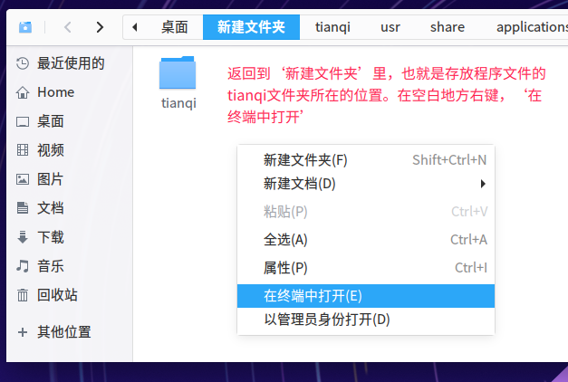
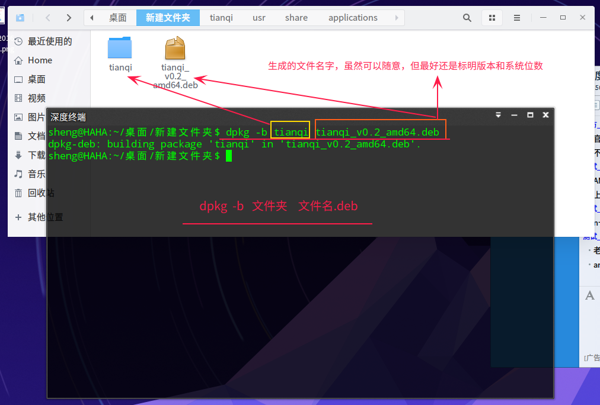
完成。
|